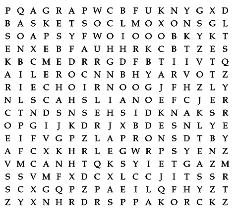

Click here to print the puzzle or choose File -> Print from your browser’s menu bar.
The names of some of the items from Mr. Merriman’s shop are hidden in the puzzle. They may be shown forward, backward, diagonally, or up and down. Some of the letters will be used for more than one word.
